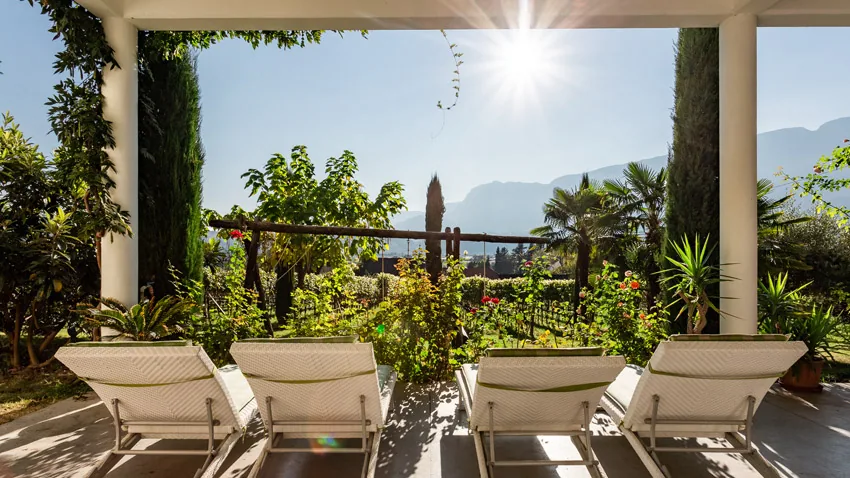

Surroundings
Activities
Art and culture, sport and good food: Bolzano and South Tyrol have a lot to offer. Here are our tips – with the distance from the farm.
Please check the seasonal opening hours.

Art & culture
South Tyrol Museum of Archaeology
See "Ötzi" live and find out more about this unique criminal story.
Messner Mountain Museum in Sigmundskron Castle
Undertake a journey on the trails of the famous South Tyrolean mountaineer Reinhold Messner.
Trautmannsdorf Castle – Merano
Stroll through the botanical garden and visit the Touriseum.
Muri-Gries Benedictine Monastery
The monastery from 1845 impresses its visitors with breathtaking frescoes.
Old parish church of Gries
This Roman Catholic Church was built in late-Gothic style.
Mercantile Museum and Mercantile Building
Learn more about the economic history of Bolzano and South Tyrol.
Museum of Modern and Contemporary Art – Museion
The Museion houses an extensive collection in modern ambience.
South Tyrol Museum of Natural History
You will find out everything about the formation history of the South Tyrolean Alps and many more.
"Busoni-Competition" – Ferruccio Busoni International Piano Competition
This is a summery-musical must-see.
Leisure
Lake Caldaro
You will relax here while swimming, fishing or pedalo riding surrounded by vineyards.
Montiggl Lakes
Those lakes are hidden in the woods and invite you to go for a walk or sunbathing.
Lido di Bolzano – open-air pool Bolzano
For all who want to swim length we recommend our open-air pool, including a children's pool.
Gargazon natural bath
Perfectly happy guarantee: Swimming in naturally infested waters, children's pool, fun pool, volleyball, kicker and many more.
Terme Merano
You are looking for relaxation with Spa and Sauna as well as various relaxation pools – then this is your place to go!
High rope climbing garden Xsund – Terlan
On five different level of difficulty you can challenge yourself – trust yourself, you'll make it!
3D archery Xsund – Terlan
An experience for the whole family which will be a fun afternoon for beginners and kids.
Minigolf Tramin
Their special offer: here you can golf at night – daily from 11:00 a.m. till midnight.
Food & drink
Restaurant "Moosbauer"
Even though this restaurant is on a campsite it offers a surprising cosy atmosphere and above all very good italian food.
Panorama restaurant "Leitenschenke"
Definitely the best dumplings of South Tyrol, homemade by a sympathetic family business – one of our personal favorite places with a gigantic view on top!
Haselburg
High above Bolzano, with a great view of the valley – we highly recommend to go there at sunset (make sure you have a reservation!).
Fish farm and restaurant "Krebsbach"
Optionally catch your fish or crab yourself before you enjoy eating it.
Patisserie and cafe "Peter Paul"
Cake and tortes – best of the best.
Tavern "Zum Falken"
We recommend the weekly new Tyrolean Tris, a classic South Tyrolean dish.
Hiking
Monzoccolo (Tschögglberg)
The hiking trail leads along past our farm, it is the perfect entry so to say.
Lungo Talvera Walks
Lungo Talvera is the name of "our" river. If you walk along you will discover the Runkelstein Castle and Castel Mareccio.
Sciliar (Schlern)
All around the mountain Sciliar there are a variety of hiking trails. We recommend to start your tour from the parking lot at Pond of Fiè (Völser Weiher).
San Genesio (Jenesien)
The European distant hiking route E5 passes by this lovely village, there is a ropeway connection directly from Bolzano.
High Plateau of Renon (Ritten)
Explore the well-known Renon earth pyramids, for example in Soprabolzano (Oberbozen) or Longomoso (Lengmoos).
Waalwege Trails Lana
Those particularly easy hiking trails take you alongside old waterways which have been used to irrigate the land and vineyards.
Stieber Waterfall
Starting from the parking lot at Moso (Moos) there is a forest path on the left which will guide you to the waterfall – just follow the "whoosh" sound.
Winter sports
Reinswald, Sarntal Valley
4 lifts, 21 km ski slope, ski tours and snowpark
More informationCorno del Renon (Rittner Horn)
3 lifts, 15 km ski slope, cross-country ski trail, toboggan and winter hiking trails
More informationObereggen, Latemar
18 lifts, 48 km ski slope, 2 toboggan runs and snowpark
More informationCarezza (Karersee)
15 lifts, 40 km ski slope, 4 toboggan runs, 16 km cross-country ski trails and snow-funpark
More informationVal Gardena (Gröden)
34 lifts, 115 km ski slope, toboggan run and 133 km cross-country ski trails
More informationSeiser Alm
21 lifts, 60 km ski slope, 60 km cross-country ski trails and funpark
More informationMeran 2000
8 lifts, 40 km ski slope, 2 toboggan runs and cross-country ski trails
More information
Markets
Weekly market Bolzano
All your heart desires: sausage, cheese, meat, fish, fruits und vegetables – organic or conventional.
Organic farmers market Bolzano
Regional, organic, in person.
Farmers market Bolzano
Here you will find everything of the region.
Traditional Flower Show Bolzano
Special flowers and arrangements will only be found on this lovely market.
Christmas market
Christmas spirit, a craft market and the mandatory mulled wine will tempt you during this contemplative time.
Spring market
The spring awakening will be celebrated with the entire family.